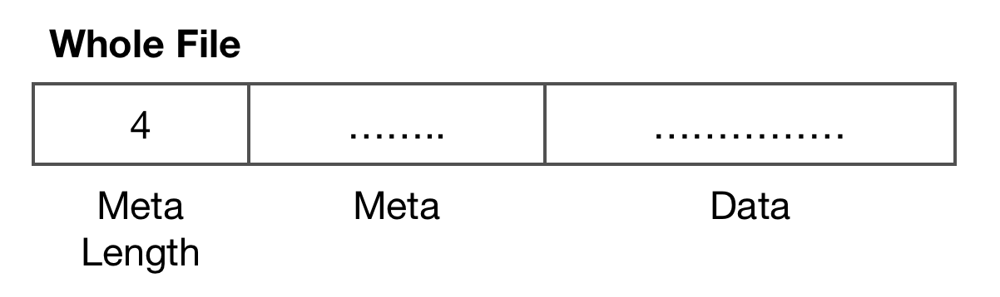
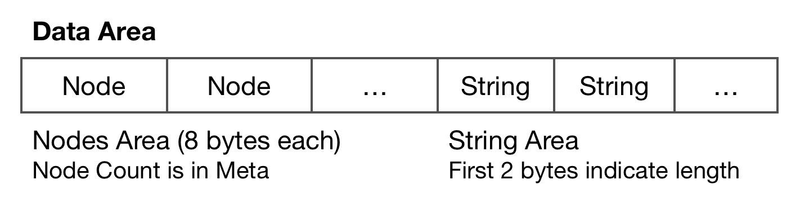
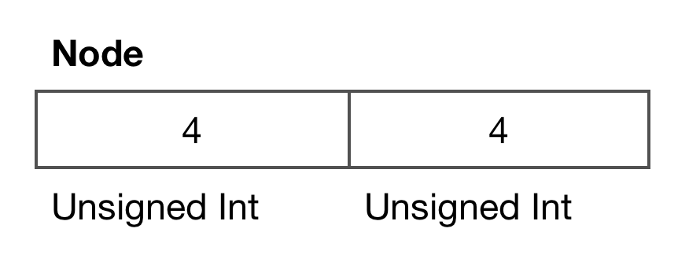

Intro
IPDB is a new file format from ipip.net storing ip geo data.
It can support more records and IPV4 records compared to old format dat.
Though there are kinds of resolver libraries on official website(Which can be found at www.ipip.net/support/code.html) but there was no document on structure of it yet.
Actually if you want to improve the performance or make a custom implementation it will be better if there was one. So i spent some time comparing the hex of file and the java code provided officially and write it down.
Note: This document is based on the free library which contains IPV4 data only.File Structure

Meta
A json string like:
{
"build": 1547017060,
"ip_version": 1,
"languages": {"CN": 0},
"node_count": 411432,
"total_size": 3330322,
"fields": [
"country_name",
"region_name",
"city_name"
]
}
Data

Node

Node is a 8 bytes record.
Generally first part is index while second part is position.
But the order of index and position is inverted when index value is greater or equal then 80. Maybe they changed the format for some reasons and here is for backward compatibility.
Indexes between 0 ~ 96(not included) are for IPV4.
Normally Node is a link chain but when